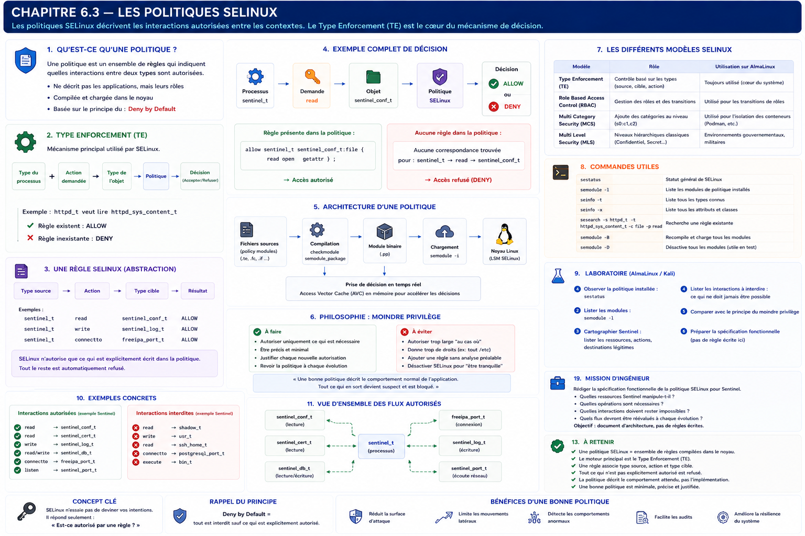

Chapitre 6.3 — Les politiques SELinux
Campagne 6 — SELinux
« Les contextes nomment les acteurs et les objets ; la politique décrit leurs interactions légitimes. »
Vous êtes ici
Partie I — Construire un socle sécurisé
Campagne 6 — SELinux
6.1 Pourquoi SELinux existe
6.2 Les contextes
► 6.3 Les politiques
6.4 Diagnostic des refus
6.5 Création de règles
6.6 Sécuriser Sentinel avec SELinux
Objectifs pédagogiques
À la fin de ce chapitre, vous serez capable de :
- expliquer le rôle d'une politique SELinux et du Type Enforcement ;
- lire une règle à partir de son domaine source, de sa cible, de sa classe et de ses permissions ;
- distinguer règle, attribut, interface, module et booléen ;
- interroger la politique chargée sans la modifier ;
- traduire les besoins de Sentinel en contrat d'accès.
Pourquoi ce chapitre existe
Un contexte tel que system_u:system_r:httpd_t:s0 identifie un processus, mais ne lui accorde aucun droit à lui seul. La politique relie ce type source à un type cible et à une opération précise.
Comprendre ce langage évite deux erreurs opposées : considérer SELinux comme une boîte noire ou ajouter une autorisation trop large dès le premier refus.
Du contexte à la décision
Lorsqu'un processus agit sur un objet, SELinux rassemble quatre informations principales :
- le type source, généralement le domaine du processus ;
- le type cible, porté par le fichier, le port ou l'objet concerné ;
- la classe d'objet, par exemple
file,diroutcp_socket; - la permission demandée, par exemple
read,writeouname_bind.
La décision est déterministe : à état de politique et contextes identiques, la même requête produit la même réponse.
Le Type Enforcement
Le Type Enforcement, souvent abrégé TE, est le mécanisme central des politiques courantes. Une règle illustrative peut s'écrire ainsi :
allow sentinel_t sentinel_conf_t:file { open read getattr map };
Elle se lit :
| Élément | Signification |
|---|---|
allow |
autoriser les opérations listées |
sentinel_t |
domaine du processus source |
sentinel_conf_t |
type de la cible |
file |
classe de l'objet cible |
{ ... } |
permissions précises accordées |
Cette règle ne désigne ni un PID ni un nom de fichier. Tout processus réellement entré dans sentinel_t bénéficie de cette autorisation sur tout fichier correctement étiqueté sentinel_conf_t.
Un modèle à autorisations explicites
SELinux n'est pas une liste générale d'interdictions. La politique décrit les interactions permises ; l'absence d'autorisation implique un refus.
Ce refus implicite rend le modèle robuste, mais explique aussi pourquoi une application nouvellement confinée révèle progressivement ses besoins réels. Il faut les observer, les justifier, puis n'autoriser que le nécessaire.
Les classes et permissions
Une même action apparente mobilise parfois plusieurs classes :
| Besoin applicatif | Classes ou permissions possibles |
|---|---|
parcourir /etc/sentinel/ |
dir avec search |
lire sentinel.conf |
file avec open, read, getattr |
remplacer status.json |
dir et file avec création, renommage ou suppression |
| écouter sur TCP 8443 | tcp_socket avec name_bind |
| se connecter à un service | tcp_socket avec name_connect |
Une règle « lecture du fichier » ne suffit donc pas toujours : le processus doit aussi traverser ses répertoires parents.
Une politique organisée en modules
La politique du système est compilée puis chargée dans le noyau. Les distributions la découpent en modules afin de faire évoluer un service sans réécrire l'ensemble.
La politique targeted, courante sur RHEL et ses dérivés, confine surtout des services ciblés. D'autres processus peuvent rester dans des domaines unconfined_*. Cela ne signifie pas que SELinux est inactif : la portée du confinement dépend de la politique et du domaine effectif.
sestatus
ps -eZ | head
sudo semodule -l | head
semodule -l inventorie les modules installés ; il ne montre pas à lui seul toutes les règles qu'ils ont générées.
Réutiliser les abstractions de la distribution
Une politique maintenable évite d'accumuler des règles brutes lorsque la distribution fournit déjà une abstraction adaptée.
Les attributs
Un attribut regroupe plusieurs types partageant un rôle. Une règle visant l'attribut s'applique à ses types membres. Cela réduit les duplications, mais une appartenance trop large peut aussi accorder plus que prévu.
Les interfaces et macros
Une interface encapsule un ensemble cohérent de permissions. Par exemple, une interface de lecture de configuration peut inclure la traversée des répertoires et la consultation des attributs nécessaires.
Les fichiers d'interface portent généralement l'extension .if. Dans un module source, des appels comme read_files_pattern(...) ou manage_files_pattern(...) expriment mieux l'intention qu'une série opaque de allow.
Les transitions de type
Une transition permet à un exécutable étiqueté, lancé depuis un domaine prévu, de démarrer dans son propre domaine. Pour un service systemd, l'objectif est par exemple :
Déclarer sentinel_t sans organiser cette transition ne confine pas automatiquement le processus.
Les booléens : des variantes prévues
Un booléen SELinux active ou désactive une variante explicitement conçue dans la politique. Il permet à l'administrateur de choisir un comportement supporté sans recompilation.
getsebool -a | less
semanage boolean -l | less
getsebool httpd_can_network_connect
sudo setsebool -P httpd_can_network_connect on
L'option -P rend le choix persistant et peut prendre un peu de temps. Sans elle, le changement ne survit pas au rechargement de politique ou au redémarrage.
Un booléen n'est pas un interrupteur universel. Activer un booléen httpd_* pour contourner un besoin de Sentinel serait trompeur si Sentinel n'appartient pas au domaine HTTP prévu. Il faut d'abord vérifier sa description et les règles qu'il contrôle.
Interroger la politique chargée
Les outils SETools répondent à des questions précises. Selon la distribution, installez le paquet setools-console.
# Types connus contenant "sshd"
seinfo -t | grep sshd
# Autorisations dont sshd_t est la source
sesearch -A -s sshd_t | head -n 30
# Règles de lecture de fichiers, si la version de sesearch accepte ces filtres
sesearch -A -s sshd_t -c file -p read
Une sortie vide signifie qu'aucune règle correspondant exactement aux filtres n'a été trouvée. Elle ne prouve pas que le domaine est totalement incapable d'atteindre l'objet : attributs, transitions et autres classes peuvent intervenir.
sepolicy fournit aussi des vues de haut niveau :
sepolicy manpage -d sshd_t
sepolicy network -a sshd_t
La disponibilité précise des sous-commandes dépend des paquets installés.
Mise en pratique — lire un contrat existant
Sur une machine de laboratoire RHEL, CentOS Stream, Rocky Linux ou AlmaLinux :
sudo dnf install -y setools-console policycoreutils-python-utils
sestatus
sudo semodule -l | sort | head -n 20
ps -eZ | grep -E 'sshd|httpd' || true
Choisissez un domaine réellement présent, par exemple sshd_t, puis répondez aux questions suivantes :
- quelles règles concernent la classe
tcp_socket? - quelles règles autorisent la lecture de fichiers ?
- certains résultats passent-ils par un attribut ?
- quels booléens documentés peuvent modifier son comportement ?
sesearch -A -s sshd_t -c tcp_socket
sesearch -A -s sshd_t -c file -p read | head -n 30
semanage boolean -l | grep -i ssh
Le but n'est pas de mémoriser la sortie, mais de formuler une question avant de lancer l'outil.
Impact sur Sentinel
Avant d'écrire une politique, Sentinel a besoin d'un contrat fonctionnel :
| Source | Cible | Action justifiée |
|---|---|---|
sentinel_t |
sentinel_conf_t |
lire la configuration |
sentinel_t |
sentinel_var_lib_t |
gérer l'état local |
sentinel_t |
sentinel_port_t |
écouter ou joindre TCP 8443 en local |
sentinel_t |
ressources système sans rapport | aucune |
Cette matrice est volontairement plus lisible qu'un fichier .te. Au chapitre 6.6, chaque ligne sera traduite en types, interfaces et permissions testées. La politique restera versionnée séparément de Sentinel 0.4.0.
Synthèse
- le contexte identifie ; la politique autorise une interaction ;
- le Type Enforcement raisonne sur une source, une cible, une classe et une permission ;
- en l'absence de règle applicable, la requête est refusée ;
- modules, attributs et interfaces rendent une politique composable ;
- un booléen n'est utilisable que pour la variante qu'il documente ;
sesearch,seinfo,sepolicyetsemodulepermettent d'interroger avant de modifier.
Schéma récapitulatif

Pour aller plus loin
Le chapitre suivant part d'un refus réel et apprend à déterminer s'il vient de SELinux, d'un mauvais contexte ou d'un besoin fonctionnel absent de la politique.
Continuer vers le chapitre 6.4 — Diagnostiquer les refus SELinux
Référence : Red Hat Enterprise Linux 9 — Writing a custom SELinux policy.